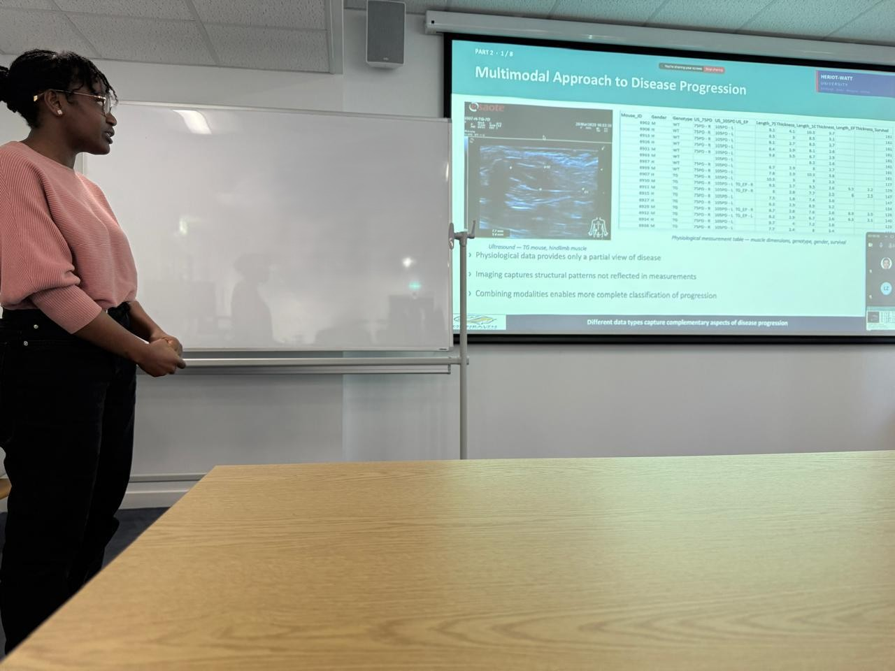
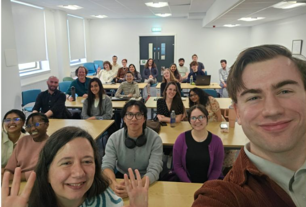

Welcome to a collection of moments from my work, studies
and involvement in the data science community.
Here I share presentations, events and outreach
from my journey.
At the ML-Health Winter Showcase, I presented my MSc research, conducted in collaboration with the University of Zaragoza, Spain, on modelling ALS disease progression in a mouse model. I explained how I combined ultrasound imaging with physiological measurements and used explainable AI methods, SHAP and LayerCAM, to interpret model predictions.
More photos

Discussing the multimodal approach to modelling disease progression.

Showcase participants. Group photo shared by Dr Marta Vallejo.
April 2026 · Outreach
Come Study in Scotland
Taking part in Brand Scotland’s
“Come Study in Scotland” campaign.
Representing the MSc Artificial Intelligence programme
April 2026 · Heriot-Watt University
Shared my experience of studying Artificial Intelligence at Heriot-Watt University.
4–5 September 2025 · Queen Mary University of London
I presented my poster, “Beyond hormones:
non-pharmacological risk factors for osteoporosis
in postmenopausal women”, at PiFORUM25.
The conference was also an opportunity to meet
fellow participants and share research interests.